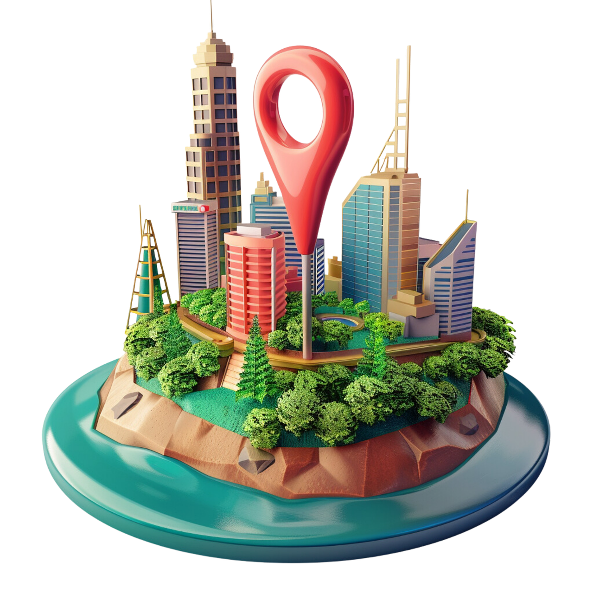

Podróże
Moja PasjaJak podróżować?
Taki swiat duży, tyle wyborów, a jednak tak cieżko jest zadecydować. Poniżej przedstawiam wam mój poradnik jak podróżować.
Moje podróże

Chwila szczęścia
Podczas wycieczki przez lasy
Średniowieczny zamek
I jego historia w Nowym Wiśniczu
Szczyt ponad chmurami
Piekna sceneria na szczycie SzyndzielniIStatystyki
PrzeszedłemŁacznie przeszedłem ponad ... km!prawie obwod calej europy! |
SpędziłemNa podroze poswiecilem ...godzin.To ... dni albo ... tygodni! |
|
 ZwiedzilemZwiedzilem ponad ... miast i wiosek ! |
|